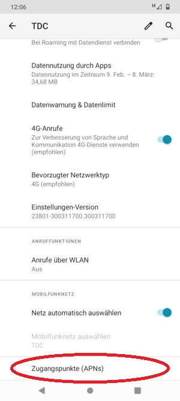

Ich habe bei meinem Vertrag 10 GB mobile Datennutzung.
Ich kann auf diese Möglichkeit nicht zugreifen, da weder der Einschaltung „Mobile Daten“ oder „Hotspot“ dazu führen, dass ich im Internet ohne WLAN surfen kann. Ist bei meinem Magenta-Einstellung etwas nicht aktiviert, oder muss ich auf mein Telefon etwas noch umschalten?
Ich habe einen Motorola G10 Telefon, mit Android 11.
Bitte um Hilfe, danke. G.Deme
Hallo @Gabrielll und willkommen in der Magenta Community.
Bitte poste hier in der Community keine persönlichen Daten wie z.B deine Email Adresse, hier kann jeder im Internet mitlesen. Bitte löschen diese das diese nicht missbraucht wird. Zu deiner Frage, hast du die APN Einstellungen überprüft? Magenta APN Einstellungen
LG
Rexalius

Falls diese Seite angezeigt wird, geben Sie default,supl ein (Achtung: in Kleinbuchstaben) und wählen Sie OK.
Falls diese Seite nicht angezeigt wird, aktivieren Sie Internet und wählen Sie OK.
Bearbeitet von Rexalius2000
Danke für Deine Hilfe! Problem: wenn ich zu Einstellung APNs gehe, steht dort: " Die Einstellungen für den Zuganspunkt sind für diesen Nutzer nicht verfügbar" Was soll ich tun. Ich habe Motorola g10 Handy. LG!!
Die Eintragung " Die Einstellungen für den Zuganspunkt sind für diesen Nutzer nicht verfügbar" ist irreführend!! Nichts weist darauf hin, dass man mit den "+" Zeichen rechts oben, die Daten manuell eingeben kann!!!
Schön das es doch noch funktioniert hat.
LG
Rexalius